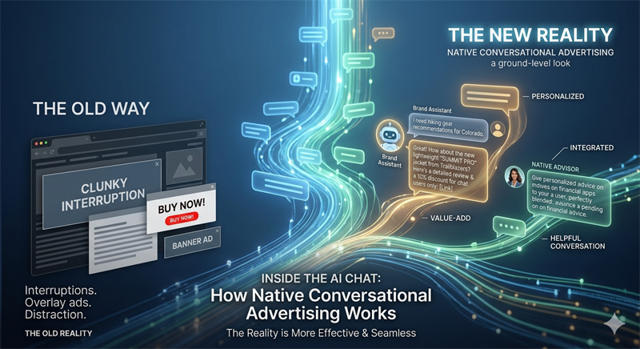

ad-tech
How Native Ads in AI Chatbots Actually Work

What is the direct answer?
Most people imagine chatbot ads as banner overlays or clunky interruptions. Native conversational ads sit inside the reply itself, matched to what the user just asked.
What are the key takeaways?
- The word native gets used loosely in advertising, so it is worth being specific about what it means here.
- There are three placement formats worth understanding.
Ask most people to picture an ad inside a chatbot and they will describe something bad. A pop-up. A banner wedged between messages. A sponsored response that screams "this was paid for" in a way that makes you trust the whole product less.
That is a reasonable fear. It is also not how the serious players in this space are building it.
Native advertising in AI chatbots, when done properly, looks nothing like traditional display advertising. It does not interrupt the conversation. It does not sit beside it. It becomes part of it. That distinction matters more here than in almost any other format, because user trust is the thing chatbot products run on.
Break the trust and you do not just lose the ad impression. You lose the user.
What makes an ad native in a chat context?
The word native gets used loosely in advertising, so it is worth being specific about what it means here.
A native ad in a chatbot is a placement that fits the form and function of the conversation itself. It is not a visual unit sitting in the interface. It is a response element: a recommendation, a product reference, a suggested next step that emerges from what the user actually asked.
The key technical requirement is that ad selection happens at the conversation level, not the session or page level. The system needs to understand what the user is trying to accomplish in this specific thread, not just the general topic they opened the chatbot to discuss.
A user who opens a chatbot to talk about meal planning is in a different mindset than a user who starts asking the same chatbot about meal planning after twenty minutes of discussing a recent diabetes diagnosis. Same topic. Different context. A native ad system that cannot distinguish between those two conversations should not be serving ads into either of them.
What are the main formats?
There are three placement formats worth understanding. Each suits a different conversational moment.
Inline recommendations. The chatbot surfaces a brand, product, or service as part of its answer. The attribution is clear, usually a small disclosure label, but the recommendation fits the conversation naturally. If a user asks for the best tools for managing a remote team and one of the suggestions is a sponsored result, that is an inline recommendation done right.
The disclosure is non-negotiable. Regulatory pressure on undisclosed AI-generated commercial content is increasing, and beyond compliance, users who feel deceived write the bad reviews and leave the product.
Sponsored cards. After the bot answers, a labelled card can sit in the thread: title, short description, call to action. The user can click or ignore. The conversation continues either way.
Suggested next steps. When the user is already deciding, a partner offer can be the next action: book, compare, or buy. This only works if the offer matches the question they just asked.
The labelled, conversation-level match is the one worth writing about. See what AI chat ads actually are.
Frequently asked questions
What is this about?
Most people imagine chatbot ads as banner overlays or clunky interruptions. Native conversational ads sit inside the reply itself, matched to what the user just asked.
Who is this for?
Readers who want the argument on the page, not a recap of the market.
What should I do next?
Read the piece. Then decide.
A chat-ad path that is not ChatGPT-priced
Indie chatbot apps still need labelled partner offers. ChatGPT-scale ad deals are out of reach. The SDK returns a labelled card or nothing. Three lines. The key stays on your server.